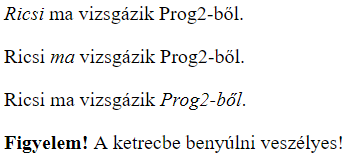
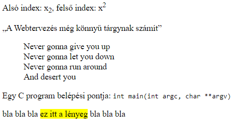
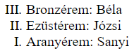
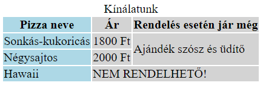
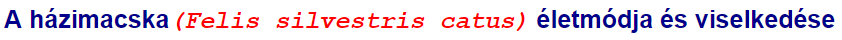
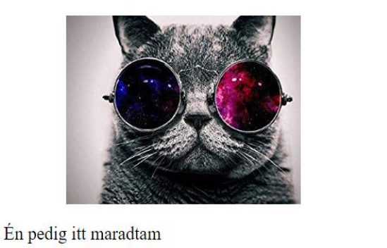

2. gyakorlat¶
A gyakorlat anyaga¶
A fontosabb HTML elemekkel való ismerkedés folytatása. A CSS nyelv szintaxisának és néhány alapvető formázási lehetőségének megismerése.
HTML alapok II.¶
Ebben a részben folytatjuk a HTML dokumentum törzsrészében (body) használatos tagekkel való ismerkedést.
Néhány fontosabb szövegelem¶
<h1>...</h1>,<h2>...</h2>, ...,<h6>...</h6>: címsorok<p>...</p>: bekezdés<br/>: sortörés (páratlan tag)<hr/>: elválasztó vonal (páratlan tag)<pre>...</pre>: előre formázott szöveg- alakhű megjelenést biztosít: az ilyen taggel megadott szövegek megőrzik a whitespace karaktereket (pl. szóköz, tabulátor, sortörés)
- akkor használjuk, ha a szöveg jellegéből szemantikusan következik a tartalom szóközökkel, térközökkel való formázása (pl. ASCII-ábrák, kódrészletek, képversek)
1 2 3 4 5 6 7 8 9 10 11 12 13 14 15 16 17 18 | |

<em>...</em>: tartalom hangsúlyozása- szemantikus jelentéssel bír
- a böngészők általában dőlt betűkkel jelenítik meg
<strong>...</strong>: erős kiemelés- szemantikus jelentéssel bír
- a böngészők általában félkövér betűkkel jelenítik meg
1 2 3 4 5 6 7 8 9 10 11 12 13 14 | |

Figyelem
A HTML tageket NE használjuk formázási célokra! Ha egy szöveget félkövérré vagy dőltté szeretnénk tenni, használjunk CSS-t!
<sub>...</sub>: alsó index<sup>...</sup>: felső index<q>...</q>: idézet (az idézőjeleket automatikusan kiteszi)<blockquote>...</blockquote>: idézetblokk<code>...</code>: kódrészlet<mark>...</mark>: vizuális szövegkiemelés
1 2 3 4 5 6 7 8 9 10 11 12 13 14 15 16 17 18 19 20 21 | |

Iframe-ek¶
Az <iframe>...</iframe> taggel beszúrhatunk a weboldalunkra egy lebegőkeretet (inline frame, röviden iframe). Ezekben a lebegőkeretekben lehetőségünk van megnyitni egy másik weboldalt.
Az <iframe> tag fontosabb attribútumai:
src: a megnyitni kívánt weboldal URL-jewidth: a keret szélessége (pixelben)height: a keret magassága (pixelben).
Példa: Szúrjuk be a TTIK honlapját a weboldalunkra egy 600x600-as iframe-ben!
1 2 3 4 5 6 7 8 9 10 | |
Listák¶
A HTML listák lehetőséget biztosítanak arra, hogy az egymáshoz kapcsolódó információkat egy csoportba gyűjtve sorolhassunk fel. Két fontos listatípus, amit gyakran szoktunk használni:
<ul>...</ul>: rendezetlen (számozatlan) lista- akkor használjuk, ha a listaelemek között nincs megállapítható sorrend
- a listaelemeket a
<li>...</li>taggel adhatjuk meg
<ol>...</ol>: rendezett (számozott) lista- akkor használjuk, ha számít a listaelemek sorrendje
- pl. egy étel elkészítésének lépései, a helyezettek felsorolása egy versenyen stb.
- a listaelemeket a
<li>...</li>taggel adhatjuk meg - fontosabb attribútumok:
reversed: fordított számozásstart: számozás kezdősorszámatype: felsorolásjel típusa- lehetséges értékei:
1: arab szám,i: "kisbetűs" római szám,I: nagybetűs római szám,a: kisbetű,A: nagybetű
- lehetséges értékei:
- akkor használjuk, ha számít a listaelemek sorrendje
Példa: Rendezetlen és rendezett lista
1 2 3 4 5 6 7 8 9 10 11 12 13 | |

Példa: Fordított sorszámozású rendezett lista, római számokkal
1 2 3 4 5 6 7 8 9 | |
A fentiekből készíthetünk akár többszintű listát is. Ennek a lényege, hogy egy listaelembe egy másik listát ágyazunk be.
1 2 3 4 5 6 7 8 9 10 11 | |

Táblázatok¶
A <table>...</table> taggel egy táblázatot szúrhatunk be a weboldalunkra. A táblázat egy sorát a <tr>...</tr> tag segítségével adhatjuk meg. Az egyes sorokon belül létrehozhatunk fejléccellákat (<th>...</th>), valamint adatcellákat (<td>...</td>).
Ha szeretnénk a táblázatnak címet adni, akkor ezt a <caption>...</caption> taggel tehetjük meg. Ezt a taget mindig közvetlenül a <table> után kell írnunk.
Példa: Egy egyszerű táblázat
1 2 3 4 5 6 7 8 9 10 11 12 13 14 15 | |
Lehetőségünk van arra is, hogy sor- és oszlopösszevonásokat végezzünk egy táblázatban:
- a celláknak adott
rowspanattribútummal megadhatjuk az összevonni kívánt sorok számát - a
colspanattribútumal pedig az összevonni kívánt oszlopok számát adjuk meg.
Azt is meg tudjuk mondani, hogy egy táblázatcella mely fejléccellá(k)hoz tartozik. Ezt a következőképpen tehetjük meg:
- a fejléccelláknak adunk egy-egy
idattribútumot (egyedi azonosítót) - a cellák
headersattribútumaként megadjuk azon fejléccellá(k)nak azid-értékét, ami(k)hez az adott cella tartozik.
Példa: Az előző táblázat kiegészítése sor- és oszlopösszevonással, valamint fejléccella-társítással
1 2 3 4 5 6 7 8 9 10 11 12 13 14 15 16 17 18 19 20 21 | |
A HTML táblázatok sorait lehetőségünk van 3 fő egységre bontani:
<thead>...</thead>: fejlécsorok csoportja<tbody>...</tbody>: adatsorok csoportja, a táblázat törzse<tfoot>...</tfoot>: láblécsorok csoportja.
A fenti tagek használata opcionális, nem kötelező. Használatuk esetén, ha papírra nyomtatjuk ki a weboldal tartalmát, akkor a hosszabb, több lapon átívelő táblázatok esetén a <thead> és a <tfoot> minden nyomtatott oldalon megjelenik.
Ha szeretnénk a táblázat oszlopait csoportosítani (pl. formázás céljából), akkor ezt a <colgroup>...</colgroup> taggel tehetjük meg. Ezt közvetlenül a <caption> után (ha van caption) és a <thead> elé (ha van thead) írjuk. Az oszlopcsoportosításon belül a <col/> páratlan tag jelöl egy oszlopot. Ha egyszerre több, mondjuk N darab oszlopot szeretnénk kijelölni a csoportosításban, akkor ezt a <col span="N"/> segítségével tudjuk megtenni.
Példa: Az előző táblázat kiegészítése a sorok és oszlopok csoportosításával
1 2 3 4 5 6 7 8 9 10 11 12 13 14 15 16 17 18 19 20 21 22 23 24 25 26 27 28 29 30 31 32 | |

CSS alapok¶
Az eddigiek során tárgyalt HTML nyelvet a weboldal tartalmának kialakítására és strukturálására használtuk. Ha a tartalmat formázni szeretnénk, akkor ezt CSS (Cascading Style Sheets) segítségével tudjuk megtenni.
Szintaxis¶
A CSS utasítások szintaxisa a következőképpen néz ki:
1 2 3 4 5 | |
A szelektor (más néven kijelölő) segítségével megmondjuk, hogy a weboldal mely elemét (vagy elemeit) szeretnénk formázni. Ezután kapcsos zárójelek között, pontosvesszővel elválasztva megadjuk az elvégzendő formázásokat tulajdonság: érték formában. A tulajdonság az adott elem formázandó tulajdonsága (pl. háttérszín, betűtípus, térköz), az érték pedig az adott tulajdonsághoz tartozó, beállítani kívánt érték.
A CSS kódba írhatunk kommenteket (megjegyzéseket) is az alábbi szintaxissal:
1 | |
Példa: Egy konkrét CSS kódrészlet
1 2 3 4 5 6 7 8 9 10 11 12 13 | |
CSS beágyazása¶
Egy HTML kódba többféleképpen is beágyazhatunk CSS formázásokat.
Inline CSS esetén a tagek style attribútumának értékeként adjuk meg a CSS utasításokat. Ekkor a formázás mindig csak az adott objektumra lesz érvényes.
1 | |
Figyelem
Az inline CSS nem hatékony, valamint a kód átláthatóságát is rontja. Emiatt ha csak lehet, kerüljük a használatát!
A lapon belüli (internal) CSS-t a <head>-ben adjuk meg, <style> és </style> között. Az így kiadott formázások az aktuális HTML dokumentumra lesznek érvényesek.
1 2 3 4 5 6 7 8 9 10 11 12 13 14 15 | |
A külső (external) CSS lényege, hogy a CSS formázásokat egy külső (.css kiterjesztésű) fájlba írjuk, majd ezt a fájlt ágyazzuk be a HTML állományunk <head> részében, a <link/> páratlan tag segítségével. Ekkor a külső CSS fájlban lévő formázások minden olyan HTML dokumentumra érvényesek lesznek, amelyek ezt a CSS fájlt beágyazzák.
1 2 3 4 5 6 7 8 9 10 11 12 | |
Tipp
A külső (external) CSS különösen hasznos akkor, amikor egy weboldal több lapjának szeretnénk ugyanazt a formázást adni.
Alapvető szelektorok¶
Ebben a részben megismerkedünk a négy legalapvetőbb CSS szelektortípussal, amikkel HTML objektumokat jelölhetünk ki. A következő leckében ezek felhasználásával összetettebb szelektorokat is készítünk majd.
- Elem szelektor: tagnév alapján jelöli ki az összes ugyanolyan nevű HTML elemet
- Class szelektor: azokat az elemeket jelöli ki, amelyek az adott
classértékkel rendelkeznek; az ilyen szelektort ponttal (.) kezdjük - Id szelektor: az adott
idértékkel rendelkező elemet jelöli ki; az ilyen szelektort kettős kereszttel (#) kezdjük - Univerzális szelektor: a
*szelektorral az összes HTML objektumot kijelölhetjük
Példa: A négy alapvető szelektor: elem szelektor, class szelektor, id szelektor és univerzális szelektor
1 2 3 4 5 6 7 | |
Értékek, mértékegységek¶
Mielőtt megismernénk az első konkrét, HTML elemek formázására szolgáló CSS utasításainkat, érdemes áttekinteni a CSS-ben használatos fontosabb mértékegységeket.
- Hosszúság megadása:
- abszolút hosszúság:
mm(milliméter),cm(centiméter),in(inch),pt(pont),pc(pica) - relatív hosszúság:
%(más értékekből számolódik),px(pixel),em(betűmérethez viszonyít),rem(gyökérelem betűméretéhez viszonyít),vw(ablakszélesség 1%-ához viszonyít),vh(ablakmagasság 1%-ához viszonyít)
- abszolút hosszúság:
- Szögek megadása:
deg(fok),rad(radián),grad(gradián) - Színek megadása:
- angol névvel - pl.
blue - decimális RGB-kóddal - pl.
rgb(0, 0, 255) - hexadecimális RGB-kóddal - pl.
#0000FF
- angol névvel - pl.
A decimális és hexadecimális RGB-kódokról részletesebben
Az additív színkeverés a vörös (Red), zöld (Green) és kék (Blue) alapszínekkel dolgozik, és ezekből kever ki különböző színeket. Az RGB-kód (a decimális és hexadecimális RGB-kód is) azt kódolja, hogy az egyes alapszínekből rendre mekkora mennyiséget használtunk fel egy adott szín kikeveréséhez.
A decimális RGB-kódnál mindhárom szín mennyisége 0 és 255 közötti lehet. Például az rgb(0, 0, 255) az jelenti, hogy a vörös (Red) szín mennyisége 0, a zöld (Green) szín mennyisége szintén 0, a kék (Blue) szín mennyisége pedig a maximális 255 (tehát ez a színkód éppen a kék színt kódolja). Az egyes színek mennyiségét itt megadhatjuk százalékosan is, ekkor értelemszerűen 0% és 100% közötti értékeket írunk mindenhova. Például százalékos megadás esetén a kék szín kódja a következő lesz: rgb(0%, 0%, 100%).
A hexadecimális RGB-kód is pontosan ugyanígy működik, csak talán első ránézésre ez nem annyira világos. A hexadecimális RGB-kódban # (kettős kereszt) után 6 darab, tizenhatos számrendszerbeli számjegyet adunk meg (tehát minden számjegy 0 és F (= 15) közötti). Az első két számjegy a vörös (Red), a második kettő a zöld (Green), az utolsó kettő pedig a kék (Blue) szín mennyiségét kódolja. Például a #0000FF a kék színt kódolja, hiszen a vörös és zöld mennyisége 0, a kék mennyisége pedig a maximális (FF).
- Ha az adott (vörös, zöld vagy kék) színhez tartozó 2 számjegy megegyezik, akkor ezt rövidítve is írhatjuk. Például
#0066FFhelyett azt is írhatjuk, hogy#06F. - A hexadecimális színkód nem érzékeny a kis- és nagybetűkre (tehát például
#12BD0Fés#12bd0fugyanaz).
Tipp
Nyilván senki nem akarja fejből megtanulni az összes létező színkódot. Szerencsére vannak olyan online szoftverek (például ez), amelyekkel manuálisan kiválaszthatunk egy nekünk tetsző színt a színpalettáról, és megtudhatjuk annak az RGB-kódját.
Szövegek formázása¶
Az alábbiakban áttekintjük a szövegekkel kapcsolatos fontosabb CSS formázásokat.
font-family: betűtípus- értékeként több betűtípus is felsorolható vesszővel elválasztva - ekkor a felsoroltak közül a legelső telepített betűtípus lesz beállítva
- a több szóból álló betűtípusok nevét (pl. Courier New) aposztrófok között (
'...') adjuk meg
font-size: betűméretfont-weight: betűvastagság- lehetséges értékei:
normal(alapértelmezett vastagság),bold(vastag),bolder(vastagabb),lighter(vékonyabb), 100 és 900 közötti szám
- lehetséges értékei:
font-style: italic- dőlt betűssé tételcolor: betűszíntext-align: szöveg vízszintes igazítása- lehetséges értékei:
left(balra),right(jobbra),center(középre),justify(sorkizárt)
- lehetséges értékei:
text-transform: szöveg átalakítása- lehetséges értékei:
uppercase(csupa nagybetűs),lowercase(csupa kisbetűs),capitalize(minden szó első betűje nagybetű),none(alapértelmezett)
- lehetséges értékei:
Példa: Néhány szövegformázás
1 2 3 4 5 6 7 8 9 10 11 12 13 14 15 16 17 18 19 20 21 22 23 24 | |

A dobozmodell¶
Minden HTML objektum felfogható egy téglalap alakú dobozként. CSS-ben gyakran használjuk a dobozmodell fogalmat, amikor elemek elrendezéséről és dizájnolásáról beszélünk. Nézzük meg az alábbi ábrán, hogy mik is ennek a dobozmodellnek a részei!

- A
contentjelenti a doboz tartalmát, ami általában az elem szöveges tartalma vagy egy kép. - A
paddinga tartalom körül található belső térköz. - A
bordera tartalmon és a belső térközön kívül elhelyezkdő szegély. - A
margina szegélyen kívül található külső margó.
Elemek méretezése¶
Miután megismertük a CSS dobozmodellt, beszélhetünk a HTML elemek méretéről (szélességéről és magasságáról).
Egy elem szélességét a width, magasságát pedig a height CSS tulajdonsággal adhatjuk meg. Ezek értékeként megadható a fentebb tárgyalt abszolút és relatív hosszúságmértékek valamelyike, vagy az auto speciális érték (ekkor a böngésző határozza meg a méretet).
Ehhez hasonlóan a min-width, max-width, min-height és max-height tulajdonságokkal rendre megadhatjuk egy elem minimális és maximális szélességét, valamint minimális és maximális magasságát.
Érdemes megjegyezni, hogy egy HTML elem tényleges méretébe a tartalom, a belső térközök (padding) és a szegélyek (border) is beleszámítanak. Nézzük meg egy egyszerű példán, hogy mit jelent ez!
Példa
Legyen adott egy 300 pixel széles HTML elem, amelyet egy minden irányból 10 pixel széles belső térköz (padding) vesz körbe! Ezen kívül rendelkezzen ez az elem egy minden irányból 5 pixel vastag szegéllyel is!
Ekkor az elem tényleges szélessége 330 pixel lesz. Ez úgy jön ki, hogy összeadjuk az eredeti szélességet (300 pixel), a bal és jobb oldali, egyenként 10 pixel széles padding-et (20 pixel), valamint a bal és jobb oldali, egyenként 5 pixel széles szegélyt (10 pixel). Az összeg valóban 300+20+10 = 330 pixel lesz.
Térközök megadása¶
A padding-top, padding-right, padding-bottom és padding-left CSS tulajdonságokkal beállíthatjuk egy elem felső, jobb oldali, alsó és bal oldali térközének a mértékét.
Ezek a tulajdonságok összevonva is megadhatók a padding tulajdonsággal, amelynek értékeként megadjuk sorban a felső, jobb, alsó és végül a bal térköz méretét. Ha ezek közül valamelyik paramétert elhagyjuk, akkor az a szemközti oldaltól fogja örökölni az értéket.
Példa: Térköz megadása a padding tulajdonsággal
1 2 3 4 5 6 7 8 9 10 | |
Margók megadása¶
Nagyon hasonlóan, mint ahogy azt a térközöknél láttuk, a margók is megadhatók...
- ...külön-külön, a
margin-top,margin-right,margin-bottomésmargin-lefttulajdonságokkal - ...összevonva, a
margintulajdonsággal (felső-jobb-alsó-bal sorrendben itt is - ha valamelyik margó méretét nem adjuk meg, akkor a szemköztitől örökli azt).
A margin-left és margin-right tulajdonságoknál az auto értéket használhatjuk az elem vízszintes igazítására:
margin-left: auto: vízszintesen jobbra igazítja az elemetmargin-right: auto: vízszintesen balra igazítja az elemet- ha mind a bal, mind a jobb margó értéke
auto, akkor vízszintesen középre igazodik az elem.
Példa: Elem vízszintesen középre igazítása
1 2 3 4 5 6 7 8 9 10 11 12 13 14 15 16 17 18 19 20 21 22 | |
Szegélyek megadása¶
A HTML elem körüli szegélyek beállítására a border CSS tulajdonság szolgál. Ennek értékeként 3 paramétert adunk meg: rendre a szegély vastagságát, stílusát és színét. Ezeket egyébként külön-külön is megadhatjuk a border-width, border-style és border-color tulajdonságokkal.
A szegély vastagsága (border-width) lehet a thin (vékony), medium (közepes) és thick (vastag) kulcsszavak valamelyike, de ha ennél pontosabbak szeretnénk lenni, akkor akár pixelben is megadhatjuk a szegélyvastagságot.
A szegély stílusának (border-style) értéke lehet solid (folytonos), dashed (szaggatott), dotted (pontozott), double (dupla), groove (faragott), ridge (kidomborodó), outset (kiemelkedő), inset (süllyesztett), none (nincs szegély) vagy hidden (rejtett).
Ha nem szeretnénk minden irányból szegélyt adni egy objektumnak, akkor a border-top, border-right, border-bottom és border-left tulajdonságokkal külön-külön is megadhatjuk a felső, jobb, alsó és bal szegélyek értékét.
Példa: Szegélyek megadása
1 2 3 4 5 6 7 8 9 | |
A háttér formázása¶
Ebben a részben megismerkedünk néhány fontosabb, a háttér formázásával kapcsolatos CSS tulajdonsággal.
background-color: háttérszín- értékeként megadható egy szín vagy a
transparent(átlátszó) kulcsszó
- értékeként megadható egy szín vagy a
background-image: háttérkép- a háttérként beállítani kívánt kép elérési útvonalát az
url('elérési_útvonal')segítségével adjuk meg
- a háttérként beállítani kívánt kép elérési útvonalát az
background-repeat: háttérkép ismétlődése- lehetséges értékek:
repeat(vízszintes és függőleges ismétlődés, alapértelmezett),repeat-x(vízszintes ismétlődés),repeat-y(függőleges ismétlődés),no-repeat(nem ismétli)
- lehetséges értékek:
background-position: háttérkép pozíciója- két értéket vár: rendre a vízszintes és a függőleges pozíciót
- a vízszintes pozíció értékei:
left(bal),right(jobb),center(középre) - a függőleges pozíció értékei:
top(fent),bottom(lent),center(középre) - a fenti kulcsszavak helyett megadhatók százalékos értékek is a pozíciók helyén
- nem kötelező mindkét értéket megadni (ha elhagyjuk a második paramétert, akkor függőlegesen középre lesz pozícionálva az elem)
- a vízszintes pozíció értékei:
- két értéket vár: rendre a vízszintes és a függőleges pozíciót
background-size: háttérkép mérete- két értéket vár: rendre a vízszintes és a függőleges méretet
- nem kötelező mindkét értéket megadni
- megadható abszolút vagy relatív hossz, vagy a lenti kulcsszavak valamelyike
auto: automatikus (alapértelmezett)cover: kitölti a hátteret az eredeti méretarányok megtartásávalcontain: a legnagyobb méretre skáláz, az eredeti méretarányok megtartásával
- két értéket vár: rendre a vízszintes és a függőleges méretet
Tipp
A háttér tulajdonságai összevonva is megadhatók a background CSS tulajdonsággal. Bővebben itt.
Tipp
A linear-gradient() és radial-gradient() segítségével színátmenetes háttereket is használhatunk. Bővebben itt és itt.
Példa: Teljes képernyős háttérkép
1 2 3 4 5 6 7 8 9 10 11 12 13 14 15 16 17 18 19 20 21 22 23 24 25 26 27 28 29 | |
Elem megjelenítése¶
A HTML elemek megjelenítését a display CSS tulajdonsággal szabályozhatjuk. Néhány lehetséges értéke:
inline: sorszintű elem (szélességét a tartalom szélessége határozza meg, nem kezdődik új sorban)block: blokkszintű elem (szélessége a rendelkezésre álló szélesség, új sorban kezdődik)inline-block: inline, de megadhatók a méretei (szélessége, magassága)none: elem eltüntetése- manapság nagy népszerűségnek örvend még a flexbox és a grid.
Példa: Kép vízszintesen középre igazítása, elem eltüntetése
1 2 3 4 5 6 7 8 9 10 11 12 13 14 15 16 17 18 19 20 21 22 23 24 | |
